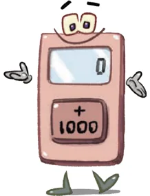
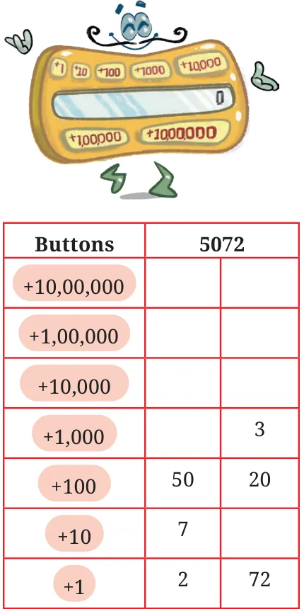

In the Land of Tens, there are special calculators with special buttons.
- 1.The Thoughtful Thousands only has a +1000 button. How many
times should it be pressed to show:

- (a)Three thousand? 3 times
- (b)10,000? ____________
- (c)Fifty three thousand? ___________
- (d)90,000? ______________
- (e)One Lakh? ________________
- (f)____________? 153 times
- (g)How many thousands are required to make one lakh?
- 2.The Tedious Tens only has a +10 button. How
many times should it be pressed to show:
- (a)Five hundred? _____________
- (b)780? _________
- (c)1000? _________
- (d)3700? ________
- (e)10,000? ___________
- (f)One lakh? _____________
- (g)____________? 435 times
- 3.The Handy Hundreds only has a +100 button. How many
times should it be pressed to show:
- (a)Four hundred? ___________times
- (b)3,700? __________
- (c)10,000? __________
- (d)Fifty three thousand? __________
- (e)90,000? __________
- (f)97,600? __________
- (g)1,00,000? __________
- (h)_________? 582 times
- (i)How many hundreds are required to make ten
thousand?
- (j)How many hundreds are required to make one lakh?
- (k)Handy Hundreds says, “There are some numbers which
Tedious Tens and Thoughtful Thousands can’t show but I can.” Is this statement true? Think and explore.
- 4.Creative Chitti is a different kind of

calculator. It has the following buttons:
+1, +10, +100, +1000, +10000, +100000 and
+1000000. It always has multiple ways of doing things. “How so?”, you might ask. To get the number 321, it presses +10 thirty two times and +1 once. Will it get 321? Alternatively, it can press +100 two times and +10 twelve times and +1 once.
- 5.Two of the many different ways to get
5072 are shown below: These two ways can be expressed as:
- (a)\((50 \times 100) + (7 \times 10) + (2 \times 1) = 5072\)
- (b)\((3 \times 1000) + (20 \times 100) + (72 \times 1) = 5072\)
Find a different way to get 5072 and write an expression for the same.